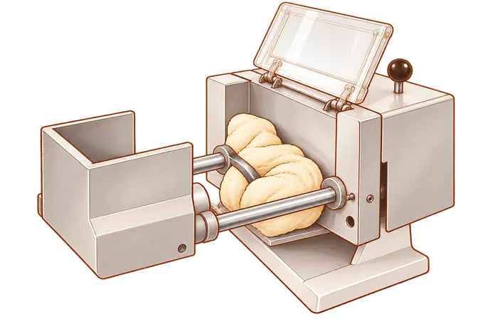
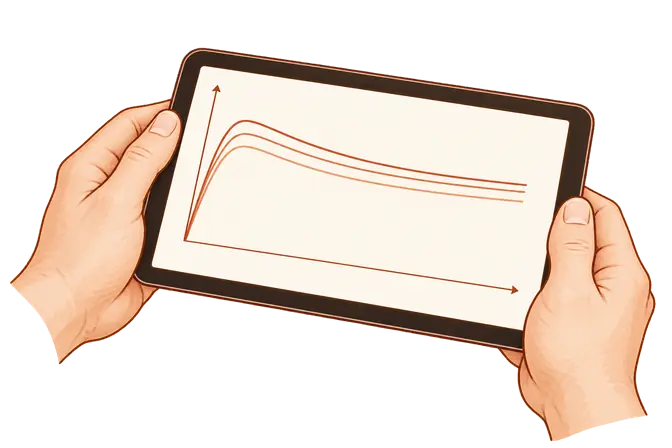
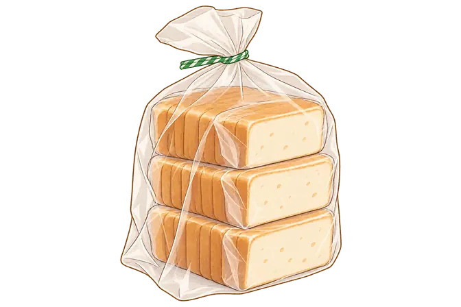

1. Assorbimento · Vasca del farinografo

Vasca del farinografo aperta per accedere al campione. L’assorbimento si determina con una prova a consistenza definita: la quantità d’acqua non si ricava dall’aspetto dell’impasto.
Riferimento: Brabender / Anton Paar
Confronta con la fotografia originale
 Stato statico di accesso al campione, non una misura in corso. Operatore omesso; involucro e raccordi semplificati. La misurazione si esegue con il gruppo richiuso secondo il protocollo.
Stato statico di accesso al campione, non una misura in corso. Operatore omesso; involucro e raccordi semplificati. La misurazione si esegue con il gruppo richiuso secondo il protocollo.2. Stabilità · Lettura del tracciato

Schema senza scala ricomposto dai tracciati mostrati sul display del farinografo: tempo in orizzontale, resistenza in verticale. La stabilità si misura durante la prova; qui non si possono leggere minuti o confrontare farine.
Riferimento: Brabender / Anton Paar
Confronta con la fotografia originale
 Tre curve qualitative, senza scala né dati sperimentali utilizzabili. Numeri, interfaccia, legenda e riferimenti a campioni specifici rimossi; non è una trascrizione dei risultati della fotografia.
Tre curve qualitative, senza scala né dati sperimentali utilizzabili. Numeri, interfaccia, legenda e riferimenti a campioni specifici rimossi; non è una trascrizione dei risultati della fotografia.3. LAB · Un esempio al microscopio
Un esempio di batterio lattico a bastoncino: Lacticaseibacillus paracasei, ridisegnato da una micrografia elettronica. Colori convenzionali e nessuna scala dimensionale; non tutti i LAB hanno questa forma.
Riferimento: Dr. Horst Neve / Max Rubner-Institut · CC BY-SA 3.0
Confronta con la fotografia originale
 Selezione e ricomposizione di un gruppo di cellule dalla micrografia. Substrato omesso; superfici e colori semplificati. Non identifica i batteri di uno specifico lievito madre.
Selezione e ricomposizione di un gruppo di cellule dalla micrografia. Substrato omesso; superfici e colori semplificati. Non identifica i batteri di uno specifico lievito madre.Illustrazione derivata dalla micrografia: selezione e ricomposizione delle cellule, semplificazione dei contorni, colori modificati. La presente illustrazione è distribuita con licenza CC BY-SA 3.0.
4. Retrogradazione · Conservazione del pane

Pane già cotto, porzionato e confezionato per il congelatore: un esempio di conservazione per rallentarne il raffermamento. La ricristallizzazione dell’amido non è visibile in questa immagine.
Riferimento: PJ Hamel / King Arthur Baking
Confronta con la fotografia originale
 Tre pacchetti di fette ricomposti dalla fotografia. Nessun confronto visivo fra pane fresco e raffermo; non rappresenta impasto da far lievitare o conservazione a temperatura ambiente. Non certifica sicurezza o durata di conservazione.
Tre pacchetti di fette ricomposti dalla fotografia. Nessun confronto visivo fra pane fresco e raffermo; non rappresenta impasto da far lievitare o conservazione a temperatura ambiente. Non certifica sicurezza o durata di conservazione.